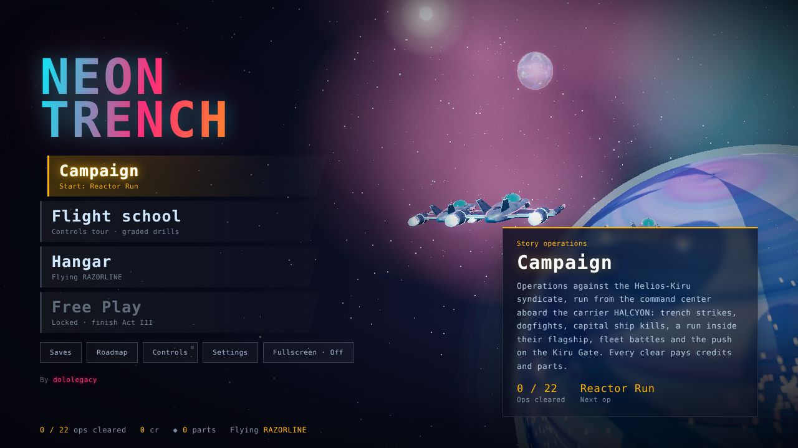
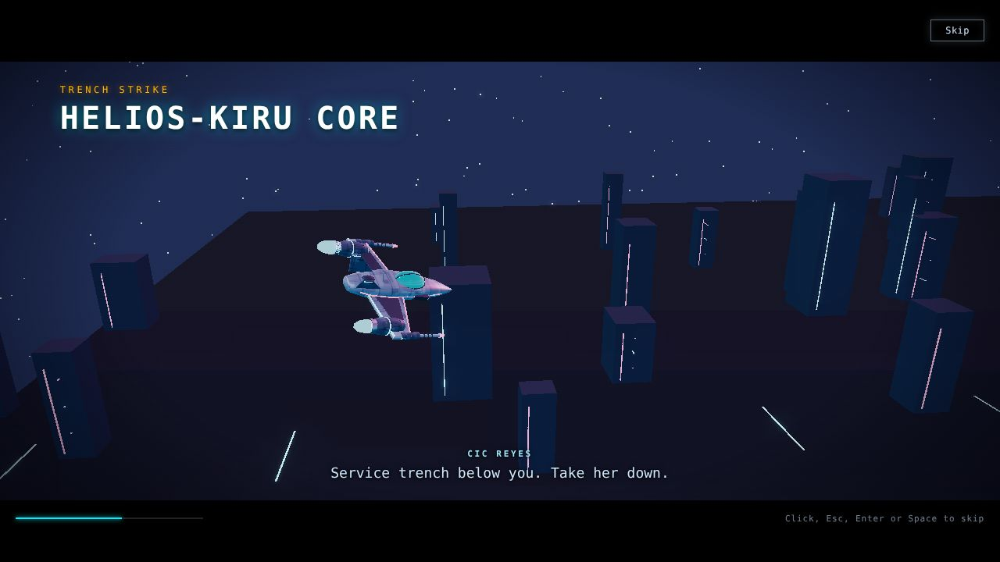

Flight combatOnline · Playable
Neon Trench
A cyberpunk flight game. You fly for the carrier Halcyon against the Helios-Kiru syndicate: trench strikes, dogfights, capital ship kills and fleet battles you command from the bridge.
- A 22-operation story campaign with briefings and bonus objectives
- Fleet battles: launch wings and focus fire from the carrier's command bridge
- Four ships to unlock and an upgrade workshop paid for with mission credits
- Flight school, a skirmish builder and free play modes
- Ops
- 22
- Ships
- 4
- Engine
- Three.js
Mouse to steer, click to fire. Works best in Chrome or Edge on a desktop.